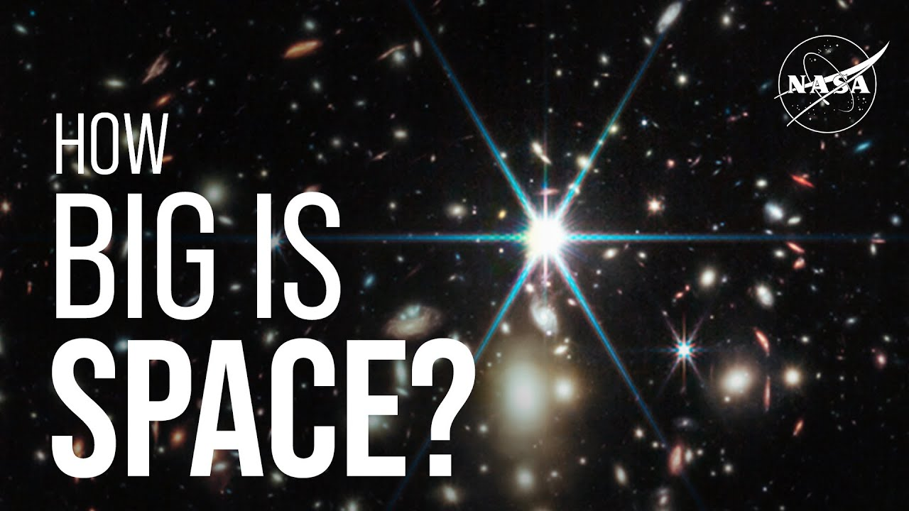

【NASA精选：太空有多大？】
Summary: Space is incredibly vast, with distances so large that driving to Pluto would take 6,000 years, and astronomers use light-years to measure interstellar and galactic scales, revealing a universe filled with billions of galaxies, some observed 13.5 billion light-years away, though its true size remains unknown.
摘要： 太空浩瀚无垠，距离之大以至于开车到冥王星需要6000年，天文学家使用光年来衡量星际和星系尺度，揭示了一个充满数十亿星系的宇宙，有些星系的光传播了135亿年才被观测到，但其真实大小仍未知。

⏱️ Estimated Reading Time: 2 min
📚 六级生词 📚 雅思生词 📚 托福生词 📚 专八生词 📚 SAT生词 📚 考研生词 📚 GRE生词 📚 高考生词
How big is space?
太空有多大？
We Asked a NASA Scientist.
我们请教了NASA科学家。
Space is really big.
太空真的很大。
Thinking about our solar system, let's imagine you could get in a car and drive to Pluto at highway speeds.
想象一下我们的太阳系，假设你可以开车以高速公路的速度前往冥王星。
It would take you about 6,000 years to get there.
到达那里大约需要6000年。
When we start to think about other stars outside of our solar system, we need to think about another unit of distance.
当我们开始考虑太阳系外的其他恒星时，我们需要考虑另一种距离单位。
This is why astronomers use the unit light-years.
这就是为什么天文学家使用光年作为单位。
Light travels at 186,000 miles per second.
光速为每秒186,000英里。
One light year is about 6 trillion miles.
一光年大约是6万亿英里。
The closest star to our Sun is about four light years away.
离太阳最近的恒星大约有四光年远。
Our own Milky Way galaxy is about 100,000 light-years across.
我们的银河系直径约为10万光年。
We know from deep field images of the universe that there are hundreds of billions, perhaps a trillion other galaxies.
从宇宙的深场图像中，我们知道还有数千亿甚至数万亿个其他星系。
Using some of the deepest images yet from JWST, we've been able to see galaxies that emitted their light about 13 and a half billion years ago.
利用詹姆斯·韦伯太空望远镜拍摄的一些最深空图像，我们已经能够看到约135亿年前发出光的星系。
Now, here's a really important thing.
现在，有一个非常重要的事情。
Because the universe is expanding, those most distant galaxies are actually much further away than 13 and a half billion light years.
因为宇宙在膨胀，那些最遥远的星系实际上比135亿光年还要远得多。
I'm glossing over some math here, but we can estimate that the observable universe is about 92 billion light-years across.
这里我省略了一些数学计算，但我们可以估计可观测宇宙的直径约为920亿光年。
But we're pretty sure that the universe is even bigger than what we can see.
但我们相当确定宇宙比我们所能看到的还要大。
And here's where things get really weird, we don't actually know if the universe is finite or infinite.
这就是事情变得非常奇怪的地方，我们实际上不知道宇宙是有限的还是无限的。
As much as we've learned about the universe, science has no reliable estimate of the actual size of the entire universe.
尽管我们对宇宙了解很多，但科学仍无法可靠估计整个宇宙的实际大小。
NASA.
NASA。
A NASA 360 Production.
NASA 360制作。